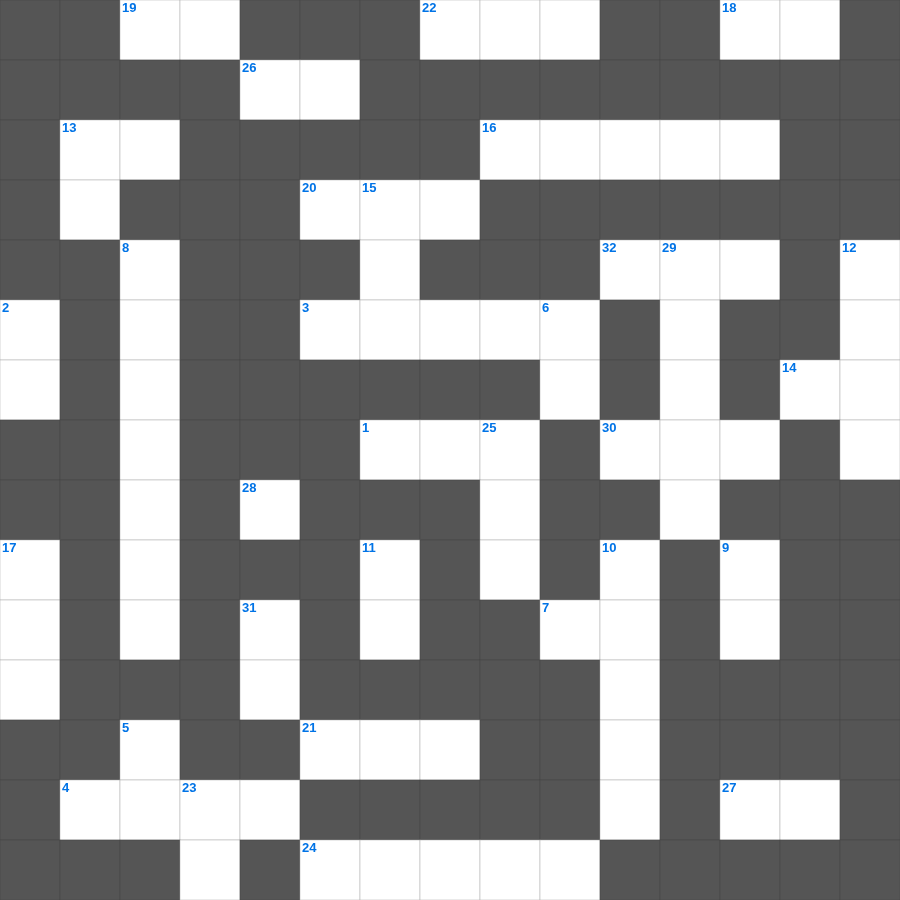

호세아: 하나님의 사랑
📌 서비스 정의
십자가로세로는 교회 주보와 주일학교에서 사용할 수 있는 성경 기반 가로세로 퍼즐 서비스입니다. 성경 인물, 사건, 핵심 구절을 바탕으로 제작되었습니다. 온라인 풀이 및 인쇄 기능을 제공합니다.
📖 호세아란?
호세아는 신실하지 못한 아내와의 결혼 생활을 통해 이스라엘의 배신과 하나님의 변함없는 사랑을 비유적으로 보여주는 예언서입니다.
📚 호세아의 주요 사건·주제
호세아와 고멜의 결혼 · 이스라엘의 영적 음란에 대한 비유 · 심판 선언 · 회개의 촉구 · 하나님의 변함없는 사랑 약속
무료로 즐기는 호세아 호세아 가로세로 퀴즈! 35개의 힌트로 구성된 가로세로 낱말 퍼즐입니다. PC와 모바일 모두 지원되며, 정답을 바로 확인할 수 있어 혼자서도 쉽게 풀 수 있습니다.

📝 가로 힌트
1. 복음을 전하는 자
3. 탕자가 돌아왔을 때 아버지가 입혀준 것
4. 성령님이 우리 곁에서 돕는 분이라는 뜻
7. 여호와는 나의 이것이시니 내게 부족함이 없으리로다
13. 사흘 만에 다시 살아나신 기적
14. 예수님이 첫 기적(물로 포도주)을 베푸신 곳
16. 에베소 사람들이 숭배한 여신
18. 예수님이 십자가에서 돌아가신 사건
19. 베드로가 감옥에서 천사의 도움으로 나옴
20. 예수님이 자라나신 동네
21. 베드로와 안드레의 고향
22. 이스라엘의 유일한 여성 사사
23. 보냄을 받은 자라는 뜻
24. 아브라함의 고향
26. 예수님의 육신의 아버지
27. 성령의 9가지 열매 중 첫 번째
30. 구름 기둥과 이것 기둥
32. 시편, 잠언, 전도서 등을 일컫는 말
📝 세로 힌트
2. 호흡이 있는 자마다 찬양하라 이것으로
5. 하나님을 경외하는 것이 이것의 근본
6. 예수님의 옷 가에 달렸던 것
8. 어린아이들이 내게 오는 것을 금하지 말라
9. 나답과 아비후가 다른 불을 드리다 죽은 일
10. 열 가지 재앙 중 마지막 재앙
11. 성전 세로 바쳤던 은화
12. 생명수 강가에 있는 이것
13. 죽음에서 다시 살아나는 것
15. 예수님이 광야에서 금식하신 일수
15. 예수님이 광야에서 시험받으신 기간
17. 대제사장의 흉패에 박힌 보석 개수
23. 여섯째 날 마지막에 만드신 존재
25. 평안히 눕고 이것하기도 하리니
28. 오직 정의를 이것 같이 흐르게 할지어다
29. 엘리야에게 떡을 대접한 사르밧 과자
31. 예수님이 우리 죄를 대신해 돌아가심
🧩 이 퍼즐에서 배우는 내용
이 퍼즐은 호세아: 하나님의 사랑의 핵심 단어와 개념을 자연스럽게 복습할 수 있도록 구성되었습니다. 주일학교 수업이나 개인 성경공부에서 학습 내용을 점검하는 용도로 바로 활용할 수 있습니다.
🧑🏫 교회 교육 자료 활용
이 퍼즐은 주일학교 교재 추천 자료로 활용할 수 있고, 주일학교 주보에 넣기 좋은 분량으로 구성되어 있습니다. 수업용 주일학교 교안에 활동지로 붙이거나, 예배 후 복습용 주일학교 공과교재로 바로 사용할 수 있습니다.
🏷️ 키워드
호세아 가로세로 퀴즈, 호세아, 십자가로세로, 성경퀴즈, 말씀퀴즈, 가로세로퍼즐, 주일학교 교재 추천, 주일학교 주보, 주일학교 교안, 주일학교 공과교재